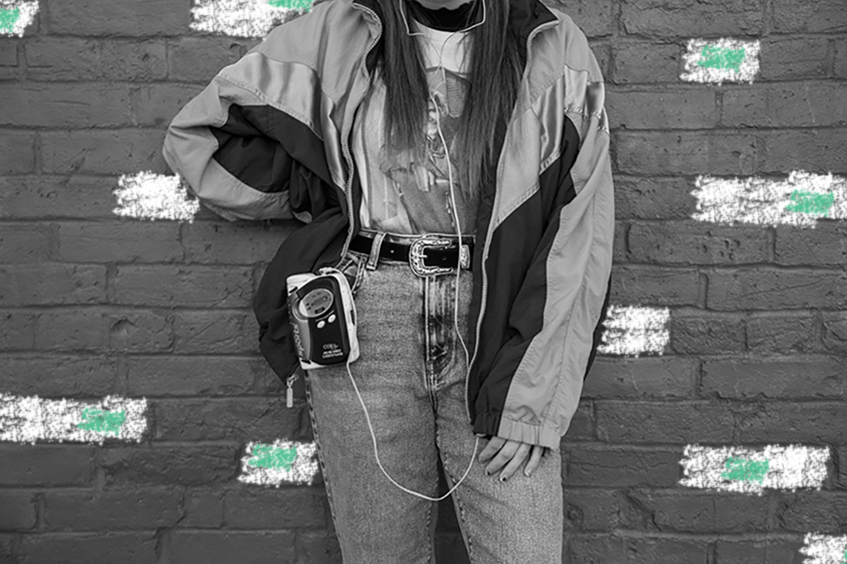
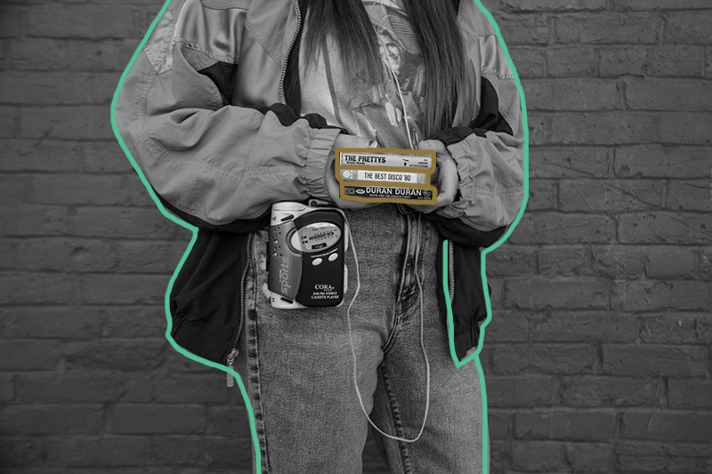

90s
What would the 90s look like if cassettes first came out?

If cassettes first came out in the 90s then cassettes players would of first came out in the 90s too. One device with endless number of cassettes to play and listen to.

Cassettes can be easily loaded into a cassette player and have the option of play, pause, stop and fast forward. Individuals will have to either carry around cassette tapes with them or only play one tape when they are out of the house. The cassette player will also have to be clipped on the individual or held in their hand.
There would be less freedom for individuals to pick a specific song they would want to listen to and would have to fast forward through a whole song if they did not like it, instead of just skipping the song like we do today. Individuals would also need to have a cassette stereo which takes up a lot of space.